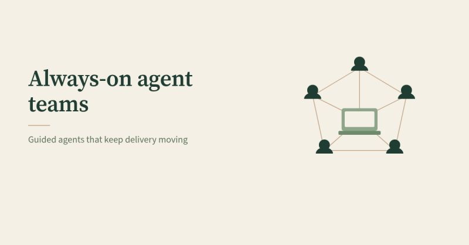

Always-on agent teams

Following my Grok Bot 101 post, have you been thinking about always-on agent teams that can run 24/7?
More on that front — OpenAI just announced “Dots” at DevDay: always-on agents with their own cloud computer. Link below for details and rollout. Their section on protections, built-in safeguards, access and permissions, and more, is worth a read.
So far I've stood up a multi-bot personal setup across delivery readiness, growth, research, operations, and creative work.
Lessons so far:
- Grok Bot feels closer to messaging a team of doers on Teams or Slack than a classic AI chat.
- Consider starting with a Project Manager-style bot that spins up specialists from your guidance, handles handoffs, and periodically recaps significant actions and open items.
- Start small and add bots based on need, experimentation, or when there is a clear, ideally repeatable, job for each. The setup tends to dial into how you work over time. A large agent count may sound great, but it isn't necessarily the initial goal and can create noise.
- Consider a verifier bot for research and claims, plus clear rules and guidance on outputs and sources cited.
- A second chat instance with the same bot can keep a topic from cluttering the main chat. History with that bot stayed unified across chats.
- Optional: Consider one lighter personality bot for ad hoc questions that do not park cleanly elsewhere — useful for overflow questions and a bit of fun.
What stands out:
- Heavy lifting can stay on the agents' computers. They prepare with your guidance; you review. The human stays in the loop.
- Voice dictation can reduce friction for setup tasks (creating new bots, memory or workflows, setting reminders, and creating routines) with less hunting through UI settings.
- Messy voice notes or thinking out loud can come back structured. Having the bot explain ideas back helps confirm understanding. Think out loud → structure → decide → execute.
- A bot can serve as a sounding board. The back-and-forth can help flesh out projects, execution details, clarify what to prioritize next and why, or develop a quick draft or rough prototype. It can help spark a direction or think things through.
- Work can keep moving in the background and you can pick it up on mobile to keep reviewing, learning, and steering.
If you add a marketplace bot template, would you start with a Grok Bot Team template, what would you review before adding it, and how would trial it?
Building agent teams for measured value still takes method: routines, real guardrails, and a human guiding the work.
Links:
OpenAI’s announcement: https://openai.com/index/introducing-dots/
Templates guide: https://x.ai/bot/guides/templates-for-grok-bot
Templates from the Grok Bot team: https://x.ai/bot/marketplace/from-grok-bot-team